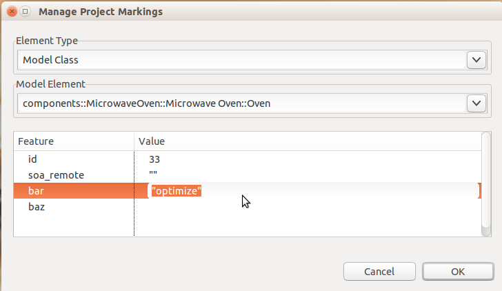

BridgePoint now supports a general purpose marking editor. The editor relies on
feature markings specified by a model compiler architect. The user then provides
application-specific marking values.

The BridgePoint documentation contains detailed information about the configuration
and use of the marking editor. See Help > Help Contents > BridgePoint UML Suite Help > Reference > User Interface > Marking Editor.
This release includes many improvements in the convert/import/edit/export flow of MASL
models:
The model compiler files have moved from underneath individual plug-ins to the
top level folder <install dir>/tools/mc/.
The BridgePoint tool build process has been improved to create 32 and 64-bit builds
specific to each platform. This allows the tool to have better integration with
the underlying OS.